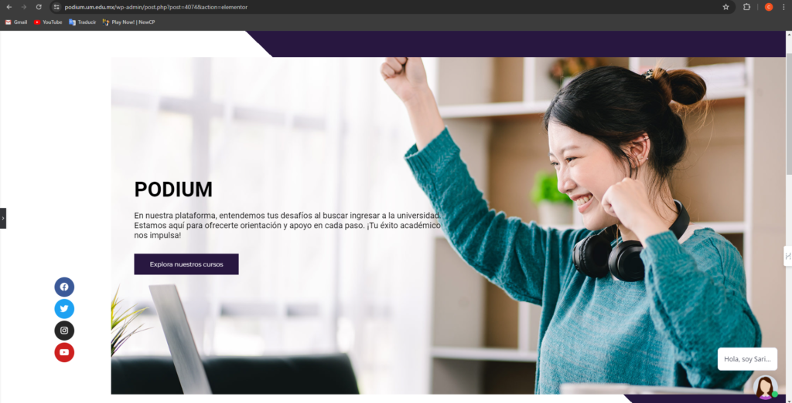
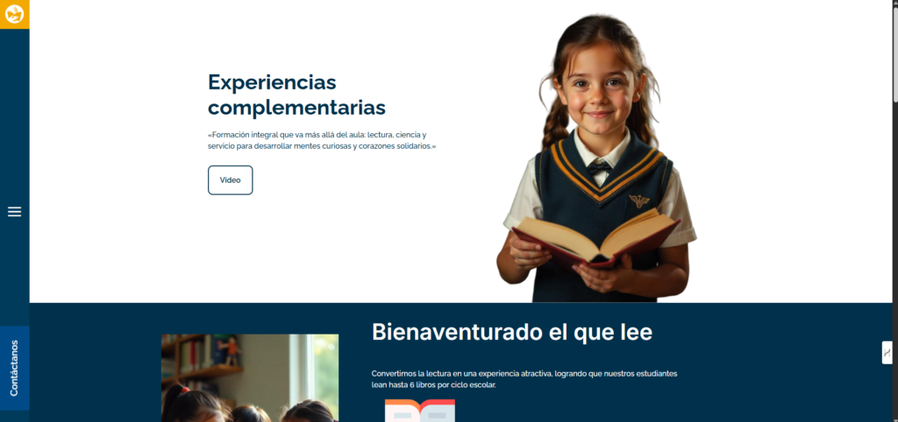
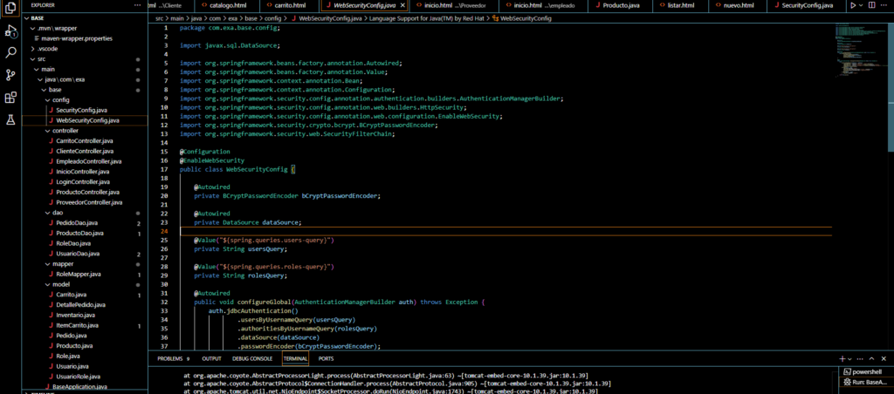
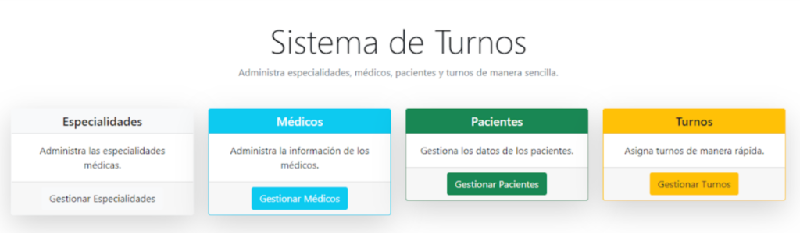
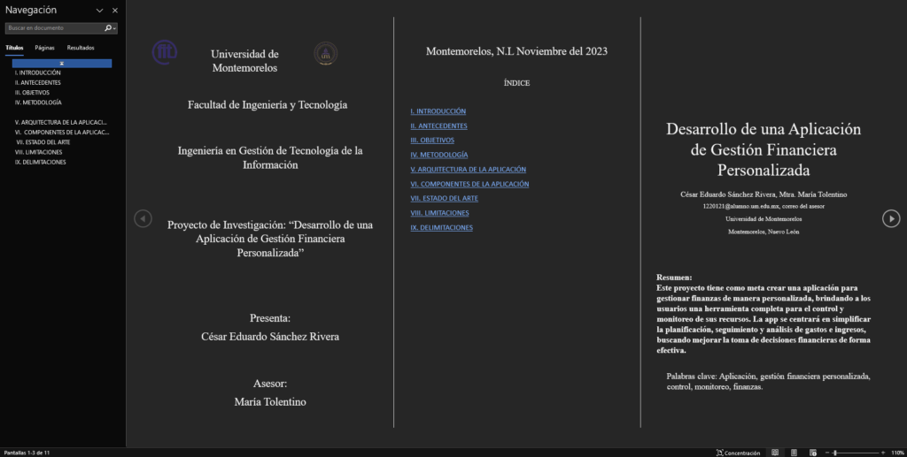
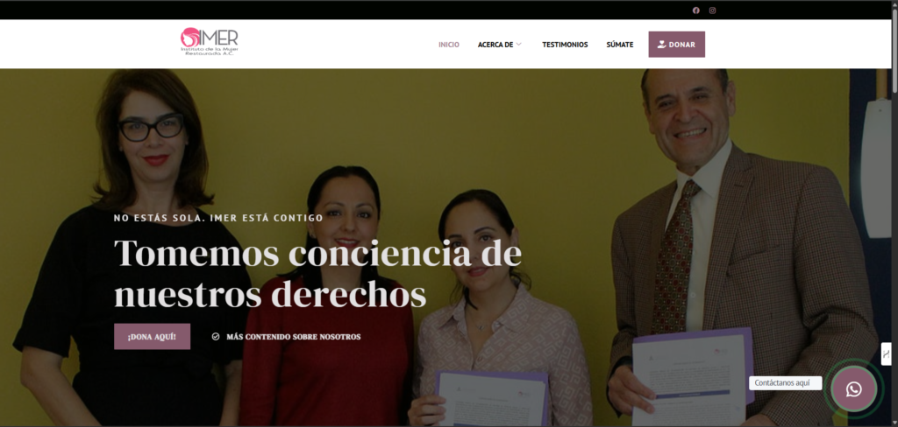
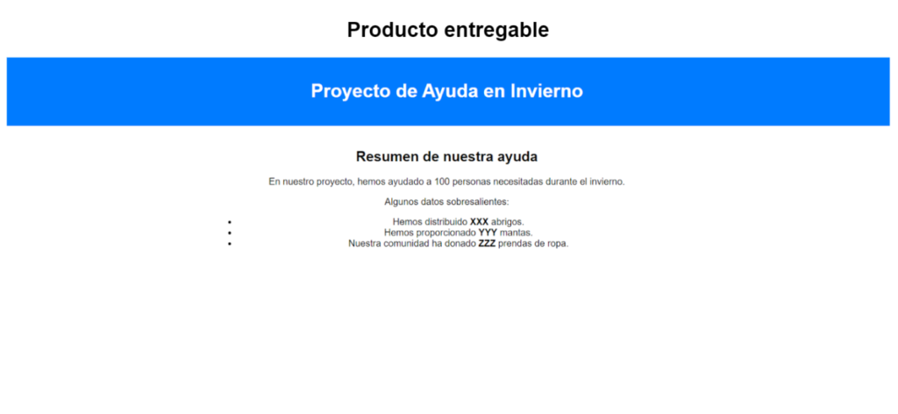
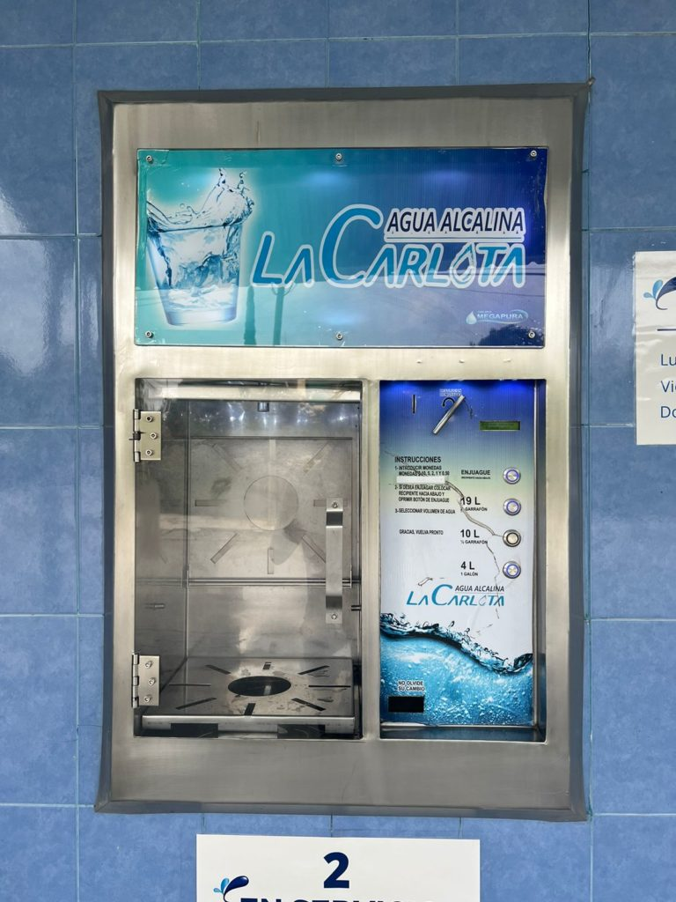
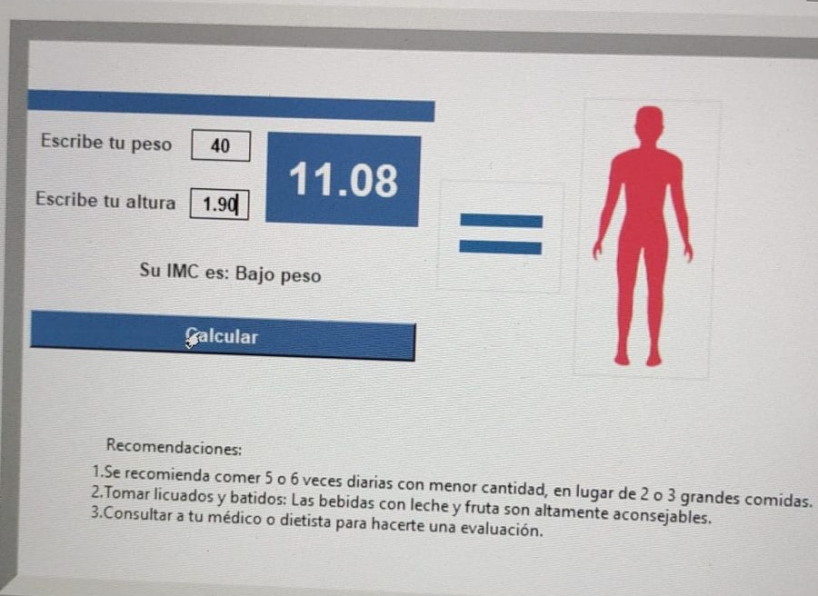
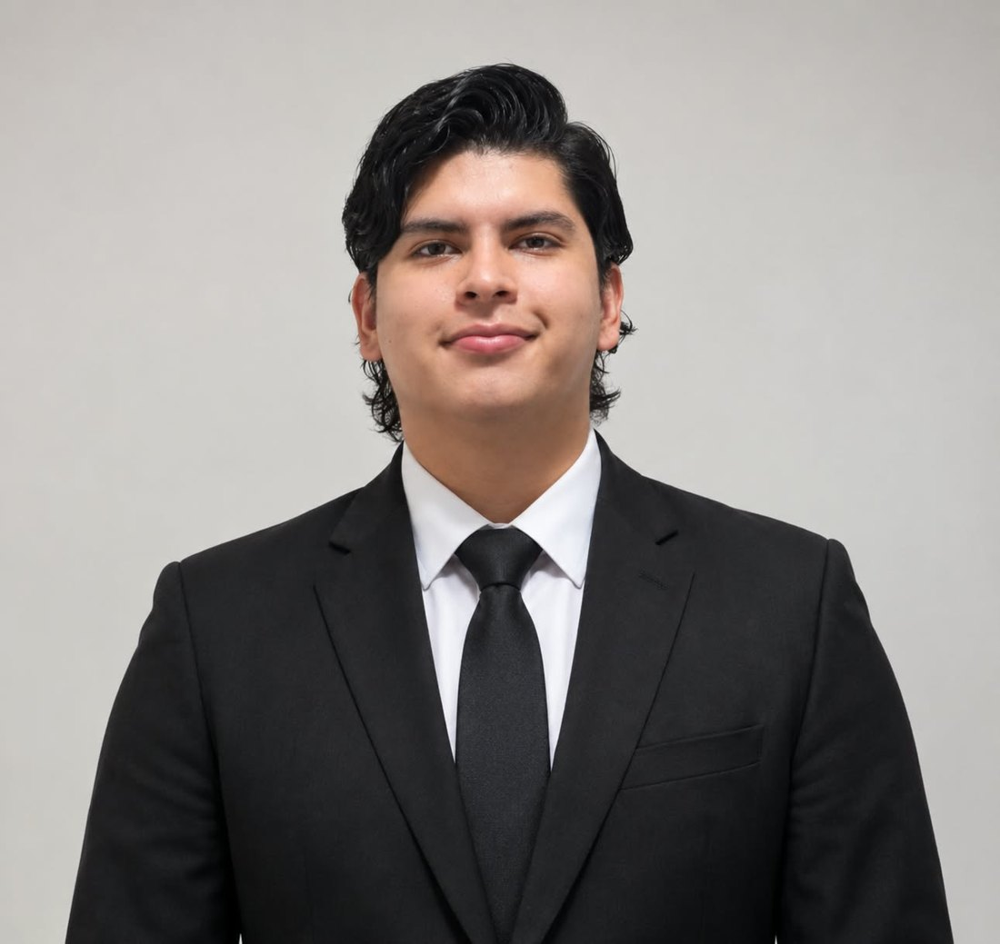

Plataforma educativa
Podium
Plataforma con material de estudio, videotutoriales y guías para aspirantes universitarios, desarrollada en equipo de dos.
Portafolio profesional · Ingeniería en Gestión de Tecnologías de la Información
Soy {ingeniero} en formación en {Gestión de Tecnologías de la Información.} Me interesa el punto donde se cruzan la {tecnología,} los {procesos} y las {personas:} entender cómo opera una {organización,} [coordinar] a quienes la hacen funcionar y [construir soluciones] que se usen en el {mundo real.}
años de formación en Ingeniería en Gestión de TI
proyectos académicos, de software y de servicio
áreas coordinadas en un mismo proyecto web (SEA)
inglés certificado · Cambridge First (FCE)
03 casos documentados
Gestión de proyectos tecnológicos · Desarrollo web

Fig. 1.1 — Vista principal del sitio. Clic para ampliar.
01 · Contexto y problema
El Sistema Educativo Adventista necesitaba un sitio web que presentara su información institucional de forma clara y consistente.
El reto no era solo técnico: el contenido y las decisiones venían de departamentos distintos, cada uno con prioridades propias.
02 · Mi rol
Mi responsabilidad fue coordinar a marketing, ingeniería, comunicación y diseño gráfico para que sus aportes se convirtieran en un producto final coherente y funcional.
03 · Herramientas y metodología
04 · Resultados e impacto
El proyecto fortaleció mis habilidades de liderazgo, coordinación y gestión de equipos en un entorno real con una institución externa.
Ingeniería de software · Bases de datos

Fig. 2.1 — Interfaz del sistema. Clic para ampliar.

Fig. 2.2 — Otro módulo del sistema. Clic para ampliar.
01 · Contexto y problema
Un consultorio necesita organizar turnos sin empalmes; una tienda de abarrotes necesita controlar productos y operaciones diarias.
Ambos casos comparten un problema: información dispersa que debería vivir en un sistema confiable.
02 · Arquitectura
Estructuré el software en capas: pantallas para el usuario, clases que contienen la lógica del negocio y una base de datos MySQL que conserva la información.
03 · Herramientas y tecnologías
Apliqué buenas prácticas de diseño de software, programación orientada a objetos y manejo eficiente de datos.
04 · Evidencia técnica
Las capturas muestran la interfaz del sistema. Haz clic en cualquier imagen para verla en tamaño completo.
Ver código en GitHub ↗05 · Resultados e impacto
Llevé lo aprendido en ingeniería de software a dos dominios distintos y ajusté el diseño conforme surgían nuevas necesidades.
Diseño de software · Experiencia de usuario

Fig. 3.1 — Interfaz diseñada para la aplicación. Clic para ampliar.
01 · Contexto y problema
Muchas personas no llevan un control claro de sus finanzas porque las herramientas les resultan confusas. El objetivo fue diseñar una aplicación que facilitara esa tarea.
02 · Metodología
Seguí un proceso completo: planificación, requisitos, interfaces, maquetación responsiva y pruebas de usabilidad.
03 · Herramientas y métodos
Prioricé requisitos y atributos de calidad para que la aplicación fuera funcional, intuitiva y fácil de usar.
04 · Evidencia
El documento del proyecto reúne la especificación, el diseño y la evaluación.
05 · Resultados e impacto
El proyecto demuestra que puedo llevar un producto desde el análisis de necesidades hasta su evaluación con criterios reconocidos de usabilidad.
Arrastra, desliza o usa las flechas

Plataforma educativa
Plataforma con material de estudio, videotutoriales y guías para aspirantes universitarios, desarrollada en equipo de dos.

ONG · Impacto social
Página web para una organización que defiende los derechos de mujeres, niñas y niños que viven violencia de género.

Equipo multidisciplinario
Proyecto con compañeros de Industrial, Sistemas y Gestión de TI, integrando perspectivas para una solución común.

Negocio local
Primera presencia en línea de una purificadora: análisis de necesidades del negocio y estructura de navegación.

Salud · ODS ONU
Interfaz en Python que calcula el IMC y sugiere ejercicios y recetas según el resultado.
Experiencia profesional
Junio 2026 – actualidad · Ciudad de México
Soporte de TI y administración de recursos tecnológicos en un entorno empresarial.

Solicitudes de equipos, aplicaciones, accesos y cuentas de usuario.
Preparación, asignación y recuperación de equipos en incorporaciones y salidas.
Seguimiento del estado de los equipos y despliegue de actualizaciones.
Control de equipos, accesorios y otros activos tecnológicos.
Manuales de procedimientos internos para estandarizar las tareas de TI.
Trabajo en equipo para resolver problemas y mantener los recursos tecnológicos.
Por confidencialidad, esta sección no incluye capturas de sistemas internos ni datos de la empresa.

Universidad de Montemorelos · FITSobre mí
Estudio Ingeniería en Gestión de Tecnologías de la Información en la Universidad de Montemorelos. Me interesa entender cómo funcionan los sistemas y las operaciones de una organización para encontrar oportunidades de mejora y proponer soluciones prácticas.
Complemento mi formación con experiencia en TI empresarial y con proyectos donde la tecnología sirve a personas reales: instituciones educativas, negocios locales y organizaciones sociales.
¿Tienes un proyecto o una vacante?
Ciudad de México, México